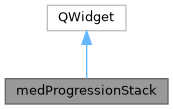

|
MUSICardio 4.2
MUSICardio application created by Inria Epione, IHU LIRYC and Université de Bordeaux
|
Loading...
Searching...
No Matches
|
MUSICardio 4.2
MUSICardio application created by Inria Epione, IHU LIRYC and Université de Bordeaux
|
Creates JobWidgets that represent the progression of a jobItem. All visible jobs will be managed here. The class stores pointers in hashTables to identify the sender of status messages It provides methods to communicate with the jobItems (e.g. to cancel the job) More...
#include <medProgressionStack.h>


Public Slots | |
| void | addJobItem (medJobItemL *job, QString label) |
| void | setLabel (QObject *sender, QString label) |
| void | setActive (QObject *sender, bool active) |
| Sets the progress bar to move without knowing percentage. | |
| void | setProgress (QObject *sender, int progress) |
| void | onSuccess (QObject *sender) |
| void | onFailure (QObject *sender) |
| void | onCancel (QObject *sender) |
| void | removeItem () |
| void | disableCancel (QObject *sender) |
Signals | |
| void | shown () |
| void | hidden () |
| void | cancelRequest (QObject *) |
Public Member Functions | |
| medProgressionStack (QWidget *parent=nullptr) | |
| QSize | sizeHint () const |
Creates JobWidgets that represent the progression of a jobItem. All visible jobs will be managed here. The class stores pointers in hashTables to identify the sender of status messages It provides methods to communicate with the jobItems (e.g. to cancel the job)
|
slot |
AddJobItem - Add a new subclass of medJobItemL to the Stack to create the connection between them
| medJobItemL * job - instance of medJobItemL | |
| QString label - the label shown on the jobToolBox if no label was given the job will not be added |
|
slot |
Modifies the GUI so as there is no way of (attempting) to cancel the job anymore, as now it is not cancellable.
| QObject* | sender |
|
slot |
Sets the progress bar to move without knowing percentage.
The developper can use the slot at any time to switch from a continuous unknown progression phase to a step by step progression.
| sender | the object which called the function, to identify the bar in the table. |
| active | if true, the bar will move on its own to show activity. If false, the progression will be set to a fraction of 100. |